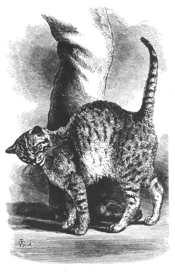
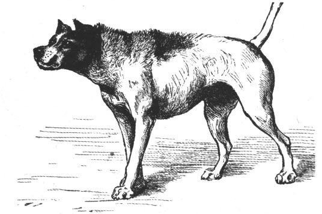
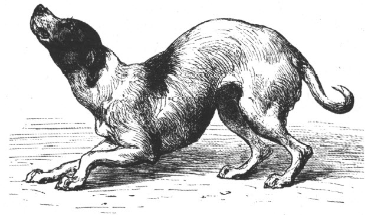
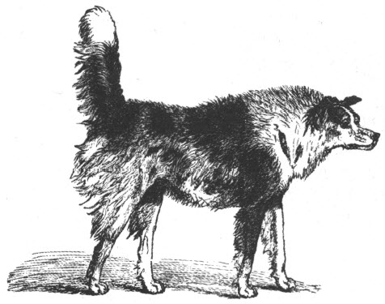
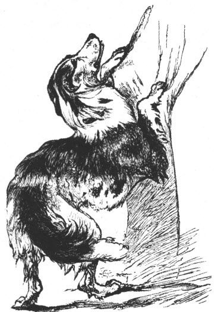
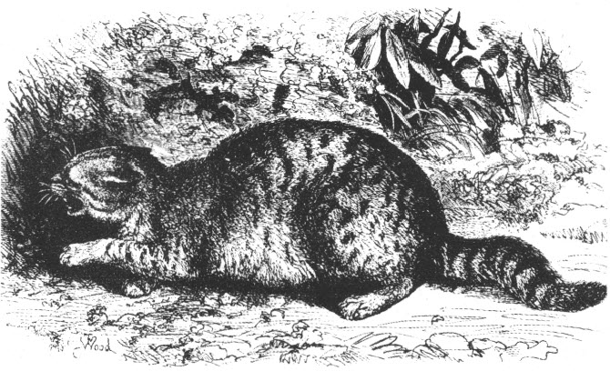
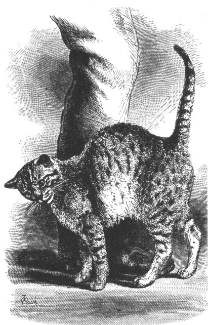

第2章
表情的一般原理（续）
·General Principles of Expression（Continued）·
因此，现在这一章里所讲到的各种动作的发展，并不受到意志和意识的支配，而是受到另一个原理的支配。显然这个原理就是：我们在一生当中所有意地进行过的各种动作，都要有一定的肌肉动作来参加；如果我们进行一种直接相反的动作，那么通常就有一组相反的肌肉也开始发生作用。

根据这些关于狗和猫方面的例子，就可以去认为，无论是敌意的姿态或者恋情的姿态，都是属于天生的或者遗传的，因为在这两种动物的各个不同品种当中，或者在同一品种的不论老幼的全部个体当中，差不多都表现出同样的姿态来。
对立原理（或反对原理）——狗和猫方面的例子——这个原理的起源——沿传的姿态（手势语）——对立原理并不是发生于那些在对立性冲动下有意识地实现的对立行动
现在我们就来考察我们的第二个原理，就是对立原理。 (1) 在上面一章里，我们已经看到，一定的精神状态会引起一定的习惯性动作；这些动作起初是有用的，以后也可能仍旧有用；而且我们会发现，如果有一种直接相反的精神状态被诱发出来，那么立刻就会显露出一种强烈的不随意的倾向，就是要去完成那些直接相反的性质的动作，即使这些动作完全无用，但也会发生。在以后讲到人类的特殊表情方面的时候，就将举出少数惊人的对立作用的例子来；可是，在这类情形方面，我们特别容易把沿传的或者人工的姿态与表情，去和那些天生的和普遍的、而且只是被公认为真正的表情这一类的姿态与表情混杂在一起；因此，在现在这一章里，我差不多专门谈到比较低等的动物方面。
当一只狗抱着怒恨的或者敌意的心绪去接近另一只陌生狗或者陌生人的时候，它就作着挺直的而且非常坚定的跨行；它的头部略微抬起，或者也不很下垂；它的尾向上伸直，而且十分刚硬；它的全身的毛竖直起来，尤其是颈部和背部的毛竖直得更加显著；耸起的双耳伸向前方，而它的眼睛则凝视着对方不动（参看图5和图7）。这些动作，正像我们以后将要说明的，是由于狗要去进攻自己的敌人这个企图而产生出来的，因此也很能使我们理解到。当狗发出怒眼的咆哮声，准备向敌人跳扑过去的时候，它的大齿就露出来，双耳紧贴在头部背后；可是，在这里我们不打算来讨论到这后面一些动作。现在我们来假定说，这只狗突然发现它所接近的那个人并不是陌生人，而就是自己的主人：并且让我们来观察，它怎样立刻把自己的全部行为完全改变过来。这时候，它不再挺直身体走路，而是把身体略微下降，甚至贴近地面，并且马上作着屈曲不定的动作，它的尾巴不再保持强硬和直举，而是向下低降和左右摆动起来；它的身上的毛变得光滑起来；它的耳朵下降而且向后牵伸，但是不太贴近头部；还有它的嘴唇则宽松地下垂。由于双耳向后牵伸，眼睑就伸长，而双眼也不再显出圆形和凝视状态。还应该补充说，在这些情况下，这只动物就因为快乐而达到兴奋状态；它的神经力量过多地发生出来，这就自然地引起几种动作来。上面所说的动作这样明显地表现出了这只动物的恋情来；可是在它们当中，没有一种动作对这只动物是有丝毫的直接用处的。依照我的看法，只可以用这样的说法来解释这些动作，就是：它们是和某些动作和姿态完全反对或者对立的；从可以理解到的原因看来，这些动作和姿态是一只打算去打架的狗所特有的，因此也就成为愤怒的表现。我请求读者去瞧看这里的4张附图（图5—图8）；这几张素描图应该可以使大家鲜明地想象到狗在上面所说的两种精神状态时候的外貌。可是，要表达出一只狗在向它的主人表示亲热和摇摆自己的尾巴时候的恋情来，却是极其困难的事情，因为这时候的表情的精华正就在于那些连续不断的屈曲动作。

图5 一只抱着敌对企图的狗在走近另一只狗 （利威尔先生绘）

图6 同图5的狗，怀有卑贱的爱抚的心绪 （利威尔先生绘）

图7 杂种的牧羊狗，抱着敌对企图在走近另一只狗 （梅伊先生绘）

图8 同图7的狗，在向主人表示亲热 （梅伊先生绘）
现在我们再来考察猫的情形。猫在受到狗的进攻威吓的时候，就弓起自己的背部，作着惊奇的状态，身上的毛直竖起来，张大了嘴，并且发出一种喷吐口水的声音来。可是，我们在这里并不打算讨论到这种大家都知道的、和愤怒结合在一起的恐怖的姿态与表情；我们单单来讨论到大怒或者愤怒的姿态与表情。这种表情并不是时常可以看到的，但是在两只猫互相打架的时候就可以被观察到；我曾经看到，有一只怒恨的猫在受到一个男孩打扰的时候，就显著地表现出这种情形来。这种姿态极像是一只老虎在受到打扰并且为了要取得自己的食物而咆哮的时候的姿态；大概每个人已经在动物园里看到过这种情形。这种动物把自己的身体伸长，贴近到地面上；整条尾巴，或者是尾端，像鞭子一样左右挥舞或者左右屈曲。身上的毛没有直竖起来。这样，这些姿态和动作就差不多好像一只野兽在准备要去猛扑它的猎物和显然已经怒恨起来的时候的情形。可是，猫在准备打架的时候，则做出另外一些不同的动作来，就是：双耳向背后紧贴起来；嘴有一部分张开，露出牙齿；前脚有时带着张开的爪向前伸出；还有，这只动物有时就发出凶恶的咆哮声来（参看图9和图10）。所有这些动作，或者差不多全部动作，都是从猫在进攻它的敌人时候的方式和企图方面自然地发生出来（后面将再来说明它们）。

图9 一只怒恨的而且准备打架的猫 （武德先生的写生画）

图10 一只正在表示亲热心绪的猫 （武德先生的写生画）
现在让我们来看，一只猫在发生恋情和向主人表示亲热的时候，具有完全相反的心绪的情形；大家可以看出，它的姿态在各方面有怎样的相反。现在，它就直立起来，把背部略微弓起，这就使身上的毛显得略微蓬松，但是并不直竖起来；它的尾巴不再像以前那样伸出和向左右挥舞，而是保持着十分刚硬和向上直升；它的双耳也举起和变成尖角式；它的嘴闭拢；还有，它把身体去挨擦自己的主人，发出低沉的喃喃声，而不是以前的咆哮声。其次，我们可以看出，在有着恋情的猫和狗的一切行为之间，有着多么巨大的差别；狗在向主人表示亲热的时候，就把身体伏下，并且屈曲不定，把它的尾巴降下和摇摆起来，并且把双耳向下压抑。这两种处在同样愉快和恋情的心绪下的食肉动物的姿态和动作完全相反的情形，据我看来，只能够用下面的说法来解释，就是：它们的动作，是和这些动物在野性发作和准备去打架或者扑取猎狗时候所自然地发出来的动作，完全对立的。根据这些关于狗和猫方面的例子，就可以去认为，无论是敌意的姿态或者恋情的姿态，都是属于天生的或者遗传的，因为在这两种动物的各个不同品种当中，或者在同一品种的不论老幼的全部个体当中，差不多都表现出同样的姿态来。
在这里，我再来举出一个表情方面的对立情形的例子来。我以前曾经养有一只大狗；它也像所有其他的狗一样，很高兴出门去散步。它在我前面庄重地跨着大步奔驰，头部向上抬得很高，耳朵适度竖起，而尾巴则向上举起，但是并不刚硬。在离开我家房屋不远的地方，有一条小路向右分支出去，通向温室；我时常走到那里去几分钟，以便察看我的试验植物。这件事情时常使这只狗发生很大的失望，因为它不知道我是不是再要继续散步下去；当我的身体开始略微转向这条小路的时候，它所显示出来的表情就立刻有显著的转变（我有时就把这件事作为一种实验来试它）；这种转变情形，真使人可笑。我的全家人都知道这只狗具有这种精神沮丧的样子，因此就把这种样子叫做温室相貌（hothouse face）。这种表情的特征就是：头部下降得很低；身体略微下沉而且保持不动；双耳和尾巴突然垂下，而尾巴则不再摆动。由于它的双耳和巨大的双颚下垂，眼睛的表情就发生很大变化，使我觉得它们已经失却了光辉。它的外貌显出是可怜而失望的沮丧样子；我已经指出，这是很可笑的，因为这种转变的原因是多么的微小。它的姿态里的各种细微部分，都和它原来的快乐而又庄严的气概完全相反；因此据我看来，除了采用对立原理以外，就无法去说明这种情形。要是这种转变发生得没有这样神速，那么我就会认为这是因为它的意气消沉对于神经系统和血液循环的影响，因此也就是对于狗的全部肌肉系统的状况的影响，正也好像人类方面所发生的情形一样；不过，可能这是一部分原因。
现在我们来考察，表情方面的对立原理怎样会产生出来的。对于社会性动物说来，同一个社会里的成员之间的交际能力具有重大意义；而对于其他的物种说来，则是异性的个体之间以及老幼不等的个体之间的交际能力具有重大意义。这种交际通常是靠了声音来实现的；可是确定无疑的是：动物的姿态和表情在某种程度上是它们互相理解的。人类不仅使用没有音节的叫喊声、姿态和表情，而且已经发明了有音节的语言；只要是“发明”（invented）这个字能够被应用到一种由无数半意识的企图所构成的过程方面去，那么实际上就可以作这样的说法了。任何一个已经注意到猿类的人，都会确实无疑地相信，猿类完全能够懂得彼此所作的姿态和表情；而且根据伦奇尔（Rengger）的说法， (2) 它们也能够懂得人类的大部分姿态和表情。一只动物在准备去进攻另一只动物的时候，或者在想恐吓另一只动物的时候，时常竖直自己的毛发、因此也就是增加自己身体的外表体积，露出牙齿，或者摆动双角，或者发出凶恶的声音来，用这些方法来显示自己可怕的样子。
因为交际能力对于很多动物确实是有极大用处的，所以我们也就绝不能à priori （演绎地）去推测说，有些姿态，对于那些已经用来表明一定感情的姿态具有明显的反对性质，起初却是在一种反对的感情状态的影响下被有意地使用过的。这些姿态现在是天生的——这个事实，绝不会对它们起初是有意的这种信念作出有力的反驳来，因为它们如果在很多世代里被使用过，那么最后就很可能被遗传下去。虽然这样，我们马上就会知道，却有一个很使人怀疑的问题出现：是不是任何一种被包括在我们现在所用的“对立”这个名称里面的现象，都是这样产生出来的呢？
至于说到沿传的姿态（conventional signs，姿态语或手势语），就是不属于天生的动作方面的姿态，例如聋子、哑子和未开化的人所使用的那些姿态，那么反对原理（Principle of opposition），或者对立原理，也可以部分地适用于这个方面。西妥教团的僧侣（Cisterian monks）认为说话是有罪的；可是，因为它们不可能避免去和别人交际，所以他们就发明一种姿态语；这种姿态语大概就是根据反对原理而产生出来的。 (3) 厄克塞忒聋哑研究所（Exeter Deaf and Dumb Institution）的斯各脱（W. R. Scott）博士写信给我说：“在教育聋子和哑子方面，反对的姿态大有用处，因为聋子和哑子具有一种敏捷地理解这些姿态的能力”。
虽然这样，我却对于这个原理只具有少数证明的例子，而感到惊奇。这个原因，一部分就在于所有这些沿传的姿态普通具有某种自然的起源，而一部分则在于聋子和哑子以及未开化的人为了使动作迅速起见，就养成了把这些姿态尽量节缩的习惯。 (4) 因此，这些姿态的自然来源或者起源，就时常使人难以知道，或者完全不明，正好像在有音节的语言方面所发生的情形一样。
除此以外，还有很多明显地彼此反对的姿态，好像双方都是具有一种有意义的起源。这种情形大概对于聋子和哑子所用来表明光明与黑暗、强壮和衰弱等的姿态方面是正确的。在后面的一章里，我将尽力来证明，肯定和否定的相反的姿态，就是点头和摇头的动作，大概是有自然的起源的。有些未开化的人使用的左右摇手的动作来作为否定的姿态；这种动作也可能是从模仿摇头动作方面被发明出来的；可是，相反的用手的动作，就是一种表示肯定而用的从面部作直线的挥手动作，是不是也由于对立法则或者某种完全不同的方法而产生出来，却还是一个疑问。
如果我们现在来考察那些天生的或者对于同一物种的所有个体都是共同的、而且是受到现在这个对立原理所支配的姿态，那么就会极其难以知道，在这些姿态当中，究竟哪一种最初被细心地发明和被有意识地进行。在人类方面，耸肩的姿态就可以作为最好的例子，去说明一种和其他动作直接相反的、而且在反对的心绪下自然地采取的姿态。遇到某种不可能做到的事情或者不可能避免的事情而无能为力或者道歉。有时这种姿态被有意识地或者随意地使用；可是，它极其不可能是最初被细心地发明和后来被习惯所固定下来，因为不仅是年幼的小孩有时会在上面所说的心绪下耸起双眉来，而且正像在后面的一章里要证明的那样，这种动作是和各种不同的附属的动作同时发生的；甚至在一千人当中，也不会有一个人能够看出这些附属的动作，除非是有人特别去注意这个问题才能够看出它们来。
狗有时在走近一只陌生狗的时候，可能认为，用自己的动作来表明出它们是友好而不想要打架这件事是有用的。当两只年幼的狗在互相嬉戏，作出咆哮声并且彼此互相去咬对方的面部和四肢的时候，大家就很明显地知道，它们都互相明白对方的姿态和举动。实际上，小狗和小猫好像也具有某种程度的本能上的意识，认为它们在嬉戏的时候绝不可以太放肆地去使用自己的尖锐的小牙齿或者小脚爪，不过有时也会发生这种事件，因而就以一种尖叫声来作为结束，否则它们就一定会时常抓伤对方的眼睛了。我的 （小猎狗）在嬉戏地咬着我的手时候，往往同时发出咆哮声来；如果它咬得太厉害，而我喊着“gently，gently”（轻些，轻些！），那么它仍旧继续咬下去，但是用摇摆几次尾巴来作回答，好像是在说道：“别担心，我只不过是闹着玩的”。虽然狗作着这样的表情，而且可能是想要向其他的狗或者人表明说，它们具有一种友好的心情，但是很难使人相信，它们会有时去细心地考虑到要把自己的耳朵向后牵伸和压抑下去，而不把耳朵竖直不动，要放下自己的尾巴和把它摇摆起来，而不把它保持刚硬和直立等等举动，因为它们知道这些动作是和那些在相反的、凶残的心绪下所采取的动作直接相反的。
（小猎狗）在嬉戏地咬着我的手时候，往往同时发出咆哮声来；如果它咬得太厉害，而我喊着“gently，gently”（轻些，轻些！），那么它仍旧继续咬下去，但是用摇摆几次尾巴来作回答，好像是在说道：“别担心，我只不过是闹着玩的”。虽然狗作着这样的表情，而且可能是想要向其他的狗或者人表明说，它们具有一种友好的心情，但是很难使人相信，它们会有时去细心地考虑到要把自己的耳朵向后牵伸和压抑下去，而不把耳朵竖直不动，要放下自己的尾巴和把它摇摆起来，而不把它保持刚硬和直立等等举动，因为它们知道这些动作是和那些在相反的、凶残的心绪下所采取的动作直接相反的。
其次，如果有一只猫，或者更加确切地说是这种动物的古代祖先，由于发生恋情，最初略微弓起自己的背部，把尾巴向上直举，并且使耳朵变得尖削起来，那么我们是不是能够去相信，这只动物在有意识地想要这样来表明出自己的心绪是直接和另一种心绪相反的，就是和一种由于准备打架或者跳扑到猎物身上去而采取的蹲伏的姿态、向着左右屈曲尾巴和压抑双耳的动作所表示的心绪完全相反的呢？我甚至更加难以相信，上面所讲到的我的大狗会有意装出意气沮丧的姿态和“温室相貌”来；这种姿态是和以前的快乐的姿态和整个行为完全相反的。绝不能去推测说，它知道我会了解到它的失望表情，因此它会软化我的心而使我放弃那个走到温室去的想法。
因此，现在这一章里所讲到的各种动作的发展，并不受到意志和意识的支配，而是受到另一个原理的支配。显然这个原理就是：我们在一生当中所有意地进行过的各种动作，都要有一定的肌肉动作来参加；如果我们进行一种直接相反的动作，那么通常就有一组相反的肌肉也开始发生作用。例如，在我们的身体向左转或者向右转方面，在把一件东西推开或者拉近我们身边来方面，还有在举起或者放下重物方面，都是这样的。我们的意图和动作彼此非常密切地联合在一起，因此如果我们急切地想要把一件东西向任何一个方向移动，那么这时候我们就很难去阻止自己的身体也向这个方向移动，即使我们当时完全意识到这种动作是一些也没有效果的。在前面的绪论里，我已经作了关于这种事实的良好说明，就是：有一个年青的热衷于打弹子的人，在监视着自己的弹子的滚动情形时候，就做出了一些奇形怪状的动作来。如果有一个大人或者小孩在发怒时候对任何一个人大声说话，要他离开，那么他通常会把自己的手臂挥动，好像要把那个人推走开来似的；虽然那个冒犯他的人并不站立在他的身旁，而且他可以不用作出一种姿态去表明说话的意义，但是他仍旧会这样做。从另一方面看来，如果我们急切地想要使某一个人走近自己的身边时候，那么我们就会做出一种动作，好像要把那个人拉近过来；还有无数其他的例子里也是这样的。
因为这种在反对的意志冲动下进行普通的反对性质的动作的情形，对于我们和比较低等的动物方面已经变成习惯，所以如果有某一种动作密切地和任何一种感觉或者情绪联合起来，那么自然可以认为，在直接相反的感觉或者情绪的影响下，由于习惯和联合作用，这些具有一种直接相反的性质的动作，即使没有用处，也一定会无意识地被完成。据我看来，只有根据这个原理，方才可以去理解这些属于现在这一章的对立种类的姿态和表情是怎样发生出来的。这些姿态和表情如果的确是可以作为无音节的叫喊声或者语言的辅助，而对人类或者任何其他动物有用，那么也就会被有意地使用下去，因此这种习惯也将加强起来。可是，不管它们作为交际手段是不是有用，如果允许我们根据类推方法来作判断，那么无论如何这种要在反对的感觉或者情绪下去进行反对动作的倾向，就会由于这些动作的长期运用而成为遗传的；因此就不用怀疑，有些根据于对立原理的表情动作是可以遗传下去的。
————————————————————
(1) ［关于对立原理方面的批评（这个原理不很受到大家的赞成），可以参看：冯德（Wundt）：《论文集》（Essays ）1885年，第230页；还有他，所著的《生理心理学》（Physiologische Psychologie ），第三版；还有塞莱（Sully）：《感觉和直觉》（Sensation and Intuition ），1874年，第29页。孟特加查（《人相学》，1885年，第76页）和杜蒙特（L. Dumont，《知觉力的科学理论》，Théorie Scienti fique de la Sensibilité ，第二版，1877年，第236页）也反对这个原理。］
(2) 伦奇尔：《巴拉圭的哺乳动物的自然史》（Naturgeschichte der säugethiere von Paraguay ），1830年，第55页。
(3) 泰洛尔（Tylor）先生在他所著的《早期人类史》（Early History of Mankind ，第二版，1870年，第40页）里，讲到西妥教团的姿态语，并且对反对原理在姿态方面的应用作了一些说明。
(4) 关于这个问题，可以参看斯各脱博士所写的有趣味的著作《聋子和哑子》（The Deaf and Dumb ），第二版，1870年，第12页。他说道：“在聋子和哑子当中，这种把自然的姿态精简成为那些比自然表情所要求的姿态更加简短得多的姿态的现象，是很普通的。这种简短的姿态往往被节缩得很厉害，以致几乎完全和自然的姿态不相同，但是它仍旧对于那些使用这种精简姿态的聋子和哑子方面具有原来的表情的力量”。